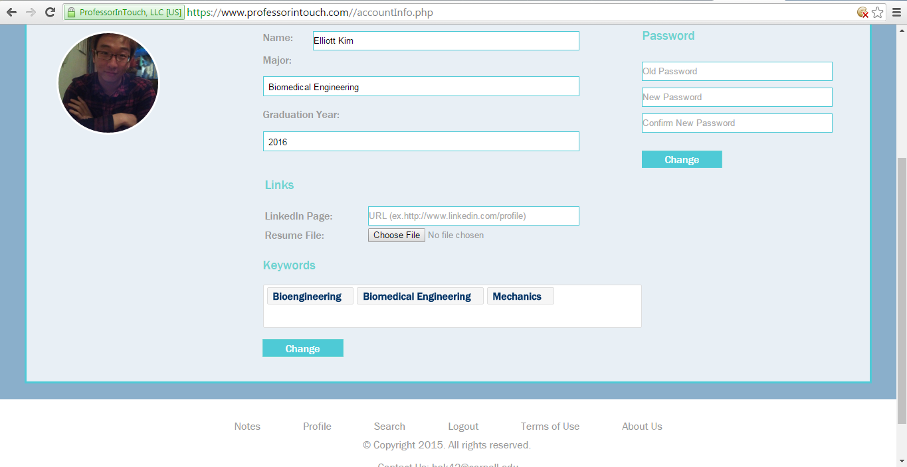
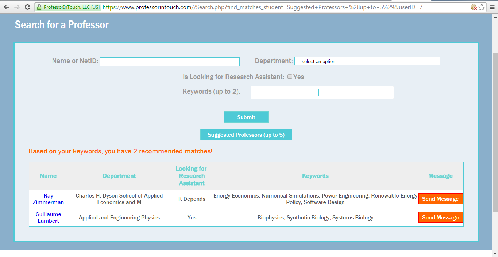

jrj85@cornell.edu • 914-924-8219
jrj85@cornell.edu • 914-924-8219


I was hired by Professor In Touch (https://www.professorintouch.com) in the spring of 2016 to build out nine backend features for their website.
Professor In Touch is a company started on Cornell's campus that aims to make it easier to connect students and professors who have similar research interests.
Professor In Touch asked me to update the Professor profile page, the Student profile page, change some information on the New Note page, modify search parameters on the Student Search page, create a password reset feature, and design and create a research keyword system. I also created a recommendation engine based on over 1,000 research keywords that provides students and professors with Suggested Matches. Some screenshots of these features are shown below.

I accomplished these tasks using HTMl, CSS, JQuery, PHP, and MySQL.
jrj85@cornell.edu • 914-924-8219